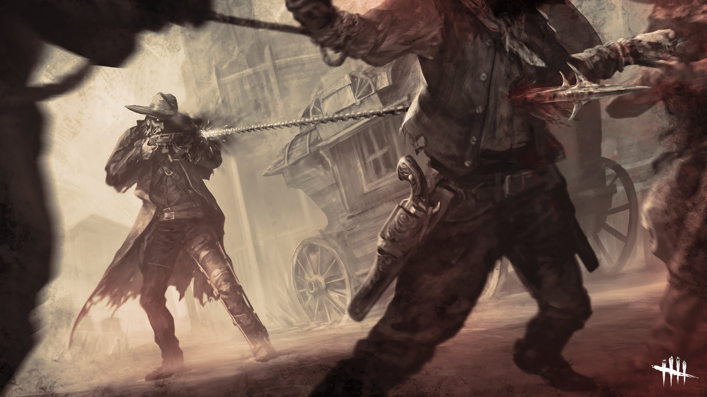
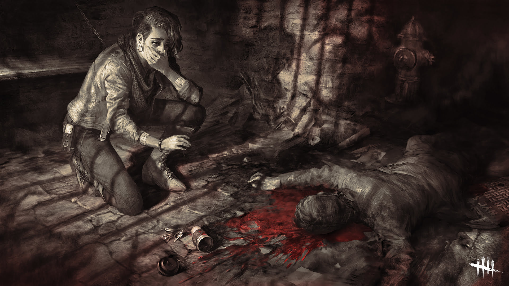

CHAINS OF HATE
El capítulo Chains of Hate incluye un nuevo mapa, la Cantina el perro muerto, en el pueblo fantasma de Glenvale. El Arponero de la Muerte, un antiguo cazarrecompensas lleno de resentimiento, es el nuevo asesino. Tras la masacre de quienes lo traicionaron en la Penitenciaría de Hellshire, el Arponero de la Muerte llegó al reino del Ente, donde ahora utiliza su invento único, un rifle que dispara una cadena, para capturar sobrevivientes para el Ente. La nueva sobreviviente es Zarina Kassir, una vaquera moderna que usa su cámara y destreza cinematográfica para ayudar a los indefensos. Mientras investigaba los hechos de la "Masacre del Loco Mick" en la prisión de Hellshire, descubrió más de lo que esperaba.

El Arponero de la Muerte
Caleb Quinn, un ingeniero brillante y de mal carácter, forjó su carrera por venganza. Desató una furia llena de violencia y sangre luego de que Henry Bayshore, su acaudalado empleador, robara las patentes de sus inventos. Durante quince años, Caleb languideció en la Penitenciaría de Hellshire mientras pagaba por sus crímenes. En una ocasión, el alcaide le pidió un favor: llenar la prisión privada con nuevos reclusos. A cambio, el alcaide usaría sus conexiones políticas para encarcelar a Bayshore por el resto de sus días. Caleb aceptó. Volvió a su taller y fabricó un arpón a presión que le permitiría capturar a los fugitivos con vida. Con una banda de reclusos liberados que trabajaban para él, Caleb emprendió una cacería por el campo como un cazarrecompensas brutalmente eficaz. Pero, a final de cuentas, solo era un peón en el juego de un hombre rico. El alcaide lo traicionó y le vendió la Penitenciaría de Hellshire a Bayshore. En un arranque de ira, Caleb irrumpió en Hellshire con su banda y mató a todo aquel que se interpusiera en su camino. La masacre terminó con Bayshore y el alcaide bañados en sangre y agonizando, quienes quedaron a merced de los prisioneros.
Zarina Kassir
Zarina, una cineasta audaz, moderna y adicta al trabajo, se esforzaba por revelar la verdad. Al crecer en un hogar libanés en Brooklyn, luchó con sus dos identidades culturales. Con el tiempo, aceptó sus raíces y las diversas capas que constituyen su identidad, luego tomó prestada la cámara digital de su papá para entrevistar a los integrantes de su comunidad en Bay Ridge. Lentamente se hizo de un público fiel al publicar su contenido en línea. La repentina muerte de su padre llenó a Zarina de ira y dolor que la hicieron pedazos. Zarina se obsesionó con Clark Stevenson, el asesino de su padre, su pandilla "IR-28" y su corta sentencia en prisión. Con lo que quedaba de su herencia, compró una cámara nueva, un boleto de avión a Nebraska y sobornó al alcaide de la Penitenciaría de Hellshire para que le permitiera entrevistar a Clark. Durante su primer encuentro con él, lo grabó y le preguntó sobre su pandilla y sus tendencias violentas. Clark se negó a hablar, pero pasaron los días y ella usó su investigación para presionarlo. Finalmente obtuvo su confesión de crimen premeditado. La película de Zarina se convirtió en un homenaje a su padre y al rastro de sangre que dejó la violencia de la pandilla. Con inspiración en la historia de la "Masacre del Loco Mick" de Hellshire, su siguiente proyecto se centró en el criminal irlandés que había matado al alcaide y sus guardias a sangre fría. Zarina se infiltró en la prisión durante un recorrido histórico y encontró la celda de Mick, pero al adentrarse en el deteriorado sitio, encontró más de lo que esperaba.
